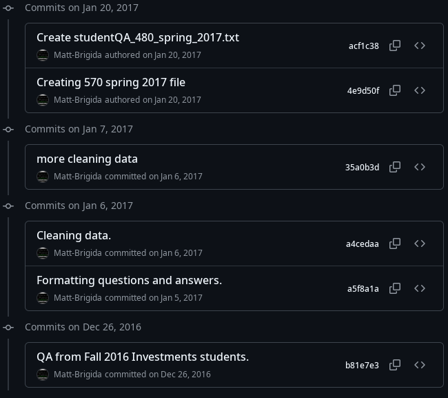

Department Head campus conversation
Leading with faculty.
Leadership philosophy, departmental vision, and academic record
Matt Brigida, Ph.D.
The Citadel · October 16, 2026
[0:00 to 0:30 | 30 seconds]
Good morning, and thank you for inviting me into this conversation. I want to use our time for three things: how I lead, where I see opportunities worth exploring together, and the record I would bring to that work.
Keep this opening quiet and direct. Do not read the subtitle.
Why this work · why here
I know the work.
The work I do now
Professor of Finance and Chair of Accounting and Finance
Director, Stephen & Gina Surace AI Trading Room
Principal Investigator, Center for Business and Applied Ethics
8 full-time faculty
7 programs
3 tenure-track lines I helped secure
$1M raised in gifts
What draws me here
As AI takes on more of the analysis, judgment and leadership become the scarce skills. The Baker School already builds both.
At a senior military college, the work of educating and developing principled leaders is daily practice, not a mission statement.
[0:30 to 2:45 | 2 minutes 15 seconds]
Sentence one: I am a finance professor who still teaches two courses each semester while chairing a department of eight full-time faculty, seven programs, and a budget above one million dollars. I helped secure three tenure-track lines, raised one million dollars in gifts, direct the Stephen and Gina Surace AI Trading Room, and serve as a principal investigator for the Center for Business and Applied Ethics.
Sentence two: The Baker School combines a mission I take seriously with the Financial Leadership Lab and Student-Managed Investment Fund, which align unusually well with the work I have built at SUNY Poly.
Sentence three: As AI takes on more of the analysis in accounting and finance, what remains valuable is judgment, accountability, and the ability to lead. A school built around developing leaders is ahead of that shift, not behind it.
Say the mission line once, slowly; do not turn it into a recruiting slogan. Then transition: Here are the seven principles that shape how I would approach the role.
Leadership philosophy · 1 of 7
Decisions are made with faculty.
Consultation must be able to change the outcome.
Underway now at SUNY Poly
Undergraduate curriculum for CPA-120
Faculty decide
How the degree is redesigned for the 120-hour licensure pathway
My role
Frame the constraints, bring the evidence, carry the result forward
A Master's in Accounting concentration
Faculty decide
Whether the concentration still earns its place
My role
Source alternative online courses so junior faculty can protect research time
When a decision is made above the department, say so plainly.
[2:45 to 4:45 | 2 minutes]
Shared governance is not a brake on leadership. It is how decisions become durable. Two examples are underway in my department right now.
First, the accounting faculty are reworking our undergraduate curriculum for the CPA-120 pathway. The design belongs to them; they own the expertise and they will teach it. My job is to frame the constraints honestly, put the evidence on the table, and carry their conclusion forward with real advocacy.
Second, the faculty are deciding to retire a concentration in our Master's in Accounting. Making that decision workable is my part: I am working with our junior faculty to find alternative online courses, so the students are served and those colleagues can keep their time for research.
There is a corollary. Some decisions are made above the department, by the dean or the provost. When that is the case, I say so plainly rather than stage a consultation whose outcome is already fixed; faculty can tell the difference. My job then is to bring the department's view upward with real advocacy, and to report back honestly on how and why the decision was made.
Leadership philosophy · 2 of 7
Make the arithmetic visible.
People can accept a difficult answer. An unexplained one corrodes trust.
Shown before the decision, not defended after
01 The budget What we actually have to allocate
02 The numbers What enrollment and demand actually say
03 The constraints Which are fixed, and which I will fight
Course assignments: a new advisor teaching for the first time took every section of ACC 201, one preparation instead of several. Those sections came from tenure-line faculty. I explained the reasoning first, and they agreed.
Since 2018
University-Wide Planning and Budget Committee
[4:45 to 6:30 | 1 minute 45 seconds]
Transparency is often less about rhetoric than arithmetic. What is the available budget? What do enrollments say? Which constraints are fixed, and which am I prepared to challenge?
A small example. When we hired an advisor who had never taught, I assigned her every section of ACC 201, Financial Accounting, so she had one course to prepare and a fair chance to succeed. Those sections had to come from tenure-line faculty. I explained the reasoning to them before making the assignments, and once they saw it, they were fine with it.
Service on SUNY Poly's University-Wide Planning and Budget Committee since 2018 has shown me how institutional tradeoffs are actually made. It lets me explain reasoning before a decision, not construct a defense afterward.
The goal is not that every colleague agrees with every allocation. It is that no one has to guess what rule was used.
Leadership philosophy · 3 of 7
Grounded in data, not limited to it.
If only what we measure counts, everything we cannot measure becomes irrelevant by default.
In practice
Build the data we need.
I started collecting employment outcomes for our students. They showed a pipeline of finance graduates into Lockheed Martin in Syracuse, some in supply chain roles.
Reason openly about the rest.
How CPA-120 will change graduate accounting enrollment: no data yet, and the decision cannot wait.
What we cannot measure still counts.
[6:30 to 8:30 | 2 minutes]
Almost everyone says they make decisions based on data. Taken literally, that is a trap. If only what we have data on enters the decision, then everything we lack data on becomes irrelevant by default, and those are often the factors that matter most.
So my approach has two halves. First, build the data we need. When I saw we were guessing about where our students land, I started collecting employment outcomes so the next decision would not be a guess. That data has already shown us something we did not know: a number of our finance students have been placed at Lockheed Martin in Syracuse, a couple of them in supply chain roles. That is a relationship and a career path we can now build on deliberately.
Second, ground decisions in the data we have while reasoning openly about what we have to infer. CPA-120 is the live example. We have no data yet on how the new pathway will change graduate accounting enrollment, but curriculum decisions cannot wait for it. So we state our assumptions, decide, and watch the numbers as they arrive.
What we cannot measure still counts. It just has to be argued for out loud.
Leadership philosophy · 4 of 7
Faculty time is a fixed budget.
Adding tasks is easy. That is not management.
How I manage it
If I add a task, I take one away.
CPA-120 meant a stack of curriculum committee forms for the accounting faculty. In exchange, I got them off a university-wide service committee.
Streamline what already exists.
Faculty reported publications, teaching, and service separately to the dean, the provost, AACSB, and Middle States. I cut that to one report.
Management is making room for the work that matters.
[8:30 to 10:15 | 1 minute 45 seconds]
One part of my management style is worth stating directly. I understand management as prioritizing faculty work under a fixed constraint: time. Adding tasks is easy, and it is not management. Anyone can send another request.
So I hold myself to a simple rule. If I add a task, I take one away. New work comes with a trade, not on top of everything else. The CPA-120 redesign I mentioned means a lot of forms through the curriculum committee for our accounting faculty. So I went to the university and got them taken off a university-wide service committee to make room for it.
The other half is continuous streamlining. I look constantly for processes that cost faculty time without adding value. For example, our faculty were reporting the same publications, teaching, and service materials four separate times: to the dean, to the provost, to our AACSB committees, and for Middle States. I reduced that to a single report that serves all four, so colleagues are not asked for the same information again and again.
Time is the resource faculty need most for teaching and research, and it is the one a head can most easily waste.
Leadership philosophy · 5 of 7
Tell people the truth early.
A colleague who first learns at the decision that the record was at risk was failed by everyone who saw it earlier.
Year one Explain the process The written standards and where committee judgment enters
Years two and three Give a candid midpoint read Teaching and publication risks, not just totals
Before renewal and tenure No false assurances Advocate without pretending to control the outcome
Throughout: protect time Shield pre-tenure faculty from service that crowds out the record
No head can promise an outcome.
A head can make the risks visible early.
[10:15 to 12:00 | 1 minute 45 seconds]
A colleague who first learns at the decision that the record was at risk was failed by everyone who saw it earlier. Development requires candor while there is still time to act.
My experience spans promotion, tenure, and evaluation committees at two institutions. I have co-chaired a peer review committee and written the evaluation letter in a renewal case. That work has taught me that written standards do not eliminate committee judgment. Teaching can operate as a threshold for renewal even when the research record is strong, and judgments about publication quality for tenure cannot be reduced to a public list.
I would never present an unwritten convention as official policy or pretend to know how a committee will decide. I can explain where judgment enters, give a candid assessment of the risks while there is time to respond, protect pre-tenure colleagues from service that crowds out the record, and advocate for the candidate without promising the outcome. Candor and advocacy belong together.
Leadership philosophy · 6 of 7
Advocate for what faculty need.
Time and money for scholarship, argued for upward.
What I have secured for faculty
Research funds
More support for the costs of doing research.
Course releases
Teaching time returned to faculty with active research agendas.
Aligned committee assignments
Committee assignments aligned with research activity and workload.
Nothing is free More research funds came with higher research expectations. I say so up front.
[12:00 to 13:45 | 1 minute 45 seconds]
Candor is half of development. The other half is advocacy: going upward and getting faculty what they need to do the work we ask of them.
At SUNY Poly I have successfully advocated for three things that matter most to scholarship: research funds, course releases, and committee assignments aligned with each colleague's research activity and workload. All three come down to the same two resources, time and money.
But nothing is free, and I do not pretend otherwise. Increased research funds came with higher research expectations. I think that is the right trade, and I tell faculty about it up front, not after the money arrives. Advocacy that hides the price is not honest, and it does not last.
Advocacy also has to be made in the institution's terms. A dean or provost responds to a case built on outcomes, not to a request for more. My job is to make that case well, and when we do not get what we asked for, to come back and explain why.
Leadership philosophy · 7 of 7
The head owns the response.
When results fall short, accountability means making sure evidence leads to action.
68% met benchmark
Diagnose Quantitative skill was the constraint
Act together Brief practice across the curriculum
80% met benchmark
Same instrument. +12 points. Highest recorded result.
[13:45 to 15:30 | 1 minute 45 seconds]
This is what I mean by accountability. When results fall short, the head owns what happens next. The head does not need to have the answer, but does need to make sure the evidence leads to action.
Our general business knowledge measure was the ETS Major Field Test in the capstone, with 145 out of 200 as the benchmark. In spring 2022, 68 percent met it and the mean was 151, about the 37th percentile nationally.
We did not stop at the headline. Subscores showed quantitative and economics performance near the 38th percentile while every other category was above average. We took that diagnosis to the full faculty retreat on May 10, 2022. Faculty agreed to short quantitative bell-ringers, practice tools for students who needed them, and explicit review of fundamentals across courses.
On the same measure in fall 2023 and spring 2024, 80 percent met the benchmark. Twelve points, the highest in our series. My point is not that the head had the answer. My responsibility was to make sure we looked honestly, acted collectively, and measured again.
Leadership in practice · fundraising
Raise the resources. Then make them academic.
$250K lead gift
Recruit Matching donors
$1M raised
Funded AI Trading Room and the NYSTEC Business Center of Excellence
The harder work came after 5 courses · FinTech Club · 100+ students · 2 industry partners
$200K SUNY grant
Center for Business and Applied Ethics, as Principal Investigator
[15:30 to 17:00 | 1 minute 30 seconds]
Principles are only worth something if they produce results, so let me show you two. The single largest thing I have done for my department is raise money. I conceived the AI Trading Room, secured a $250,000 lead gift, and then recruited matching donors until we had raised one million dollars. That funded both the AI Trading Room and the new NYSTEC Business Center of Excellence.
But a gift is where the work starts. The harder part came afterward: turning a room full of equipment into an academic resource. I worked with colleagues as they brought unfamiliar tools into their courses, and today it supports five courses and the FinTech Club, reaches more than 100 students, and anchors two industry partnerships. I now direct it.
Separately, I am a principal investigator on a $200,000 SUNY grant for our Center for Business and Applied Ethics, where I work on the center's projects and programming, including bringing in speakers.
For The Citadel, the lesson is not the dollar figure. It is the sequence: a clear academic purpose that donors can see, a lead gift that makes the next gift easier, and a plan for how faculty and students will actually use what is built. The Baker School's own facilities show that donors here respond to that kind of case.
Leadership in practice · program growth
Growth comes from program design.
+50% Finance enrollment
Steady Accounting, through
Programs I have built or led
2015 Online MBA, Finance concentration Clarion · built the curriculum
2015 M.S. Applied Data Analytics Clarion · coordinated curriculum
2019 B.S. Finance SUNY Poly · coordinator since 2020
2022 M.S. Data Science and Analytics SUNY Poly · committee member
2025 Ph.D. in Data Analytics SUNY Poly · chair, under review
One system, not three problems curriculum · advising · recruiting · employers and alumni in the building
[17:00 to 18:15 | 1 minute 15 seconds]
The second result is growth. Over the past five years, Finance enrollment in my department has grown by roughly 50 percent, and Accounting has held steady through shifting CPA licensure requirements while the number of accounting degrees awarded nationally was falling.
That did not come from promotion. It came from treating curriculum, advising, and recruiting as one system: courses offered when students need them, advising that is accurate about licensure and graduate pathways, a degree that visibly leads somewhere, and employers and alumni in the building.
Program development has been the through-line of my career: an online MBA in Finance and an M.S. in Applied Data Analytics at Clarion; at SUNY Poly, the B.S. in Finance, which I coordinate, the M.S. in Data Science and Analytics, and the proposed Ph.D. in Data Analytics, whose committee I chair. I would bring the same approach here.
Departmental vision · begin with credit
Momentum is already visible.
Student-Managed Investment Fund
Rick and Mary Lee Bastin Financial Leadership Lab
Bastin Hall
Faculty work with generative AI
AACSB accreditation
#1 Regional University in the South
3 years running · Best Public University in the South for 16 years · U.S. News & World Report
[18:15 to 19:15 | 1 minute]
Before proposing anything, I want to recognize the platform already here: the Student-Managed Investment Fund, the Bastin Financial Leadership Lab, Bastin Hall, faculty already doing serious work with generative AI, and AACSB accreditation. The institution itself is the number one Regional University in the South for the third consecutive year and has been the Best Public University in the South for 16 consecutive years.
Stop there. This slide contains no proposal. Transition: My first job would be to understand how these pieces work from the people who built them.
How we would get there
Listen first. Earn the right to scale.
First 90 days Listen, map, return Faculty, students, staff, partners Map commitments and constraints Return what I heard, and where views differ Year one Choose and pilot Faculty choose the questions Define evidence of success Run bounded pilots Year two Scale or retire Scale what the evidence supports Resource faculty ownership Retire what did not, and say so
External engagement is the supporting layer donors · advisory board · placements · capstones · regional partners
[19:15 to 21:30 | 2 minutes 15 seconds]
I am proposing to people who know this department better than I do. So the first 90 days are not a rollout. They are structured listening.
I would ask each colleague what must not be lost, what creates friction, where student demand is moving, and what one opportunity deserves attention. I would map the curriculum, schedules, assessment commitments, faculty aspirations, and partner relationships. Then I would return the synthesis to the faculty: what I heard consistently, where views differ, and which questions seem ready for exploration. Listening without showing what was learned is just intake.
The four opportunities I am about to show you are candidates for that process, not four initiatives to launch at once. In year one, the faculty would choose the questions worth testing, define what success would look like, and run bounded pilots that fit available capacity. In year two, we would scale only what the evidence and faculty ownership support, resource it properly, and stop what did not work.
External engagement is not a separate initiative. It is the layer that can resource all of them through donors, advisory participation, placements, and capstone work. After verification, possible connections include Charleston's port and logistics, manufacturing, and financial services sectors, along with the Directors' Institute, Executive Development Institute, and South Carolina Veterans Business Outreach Center. The head's job is to make partnerships usable by faculty, not simply accumulate contacts.
Opportunity to explore · 1
A pipeline for changing CPA pathways
CPA-120 at SUNY Poly · Sept. 2026
0 new courses needed to meet New York's 120‑hour pathway
ACC 312 Accounting Systems now required, for accounting information systemsFIN 420 Financial Analytics now required, for business data analytics
30 accounting credits (27 req.) · 23 upper-division (18 req.)
Questions to explore here
Licensure How should changing pathways shape advising?
Progression Does the year a master's saves justify a graduate option here?
Curriculum Where does analytics add real accounting value?
On accounting matters, I would lean on the accounting colleagues who own the expertise.
South Carolina, since June 30, 2025 Bachelor's + 2 years' experience, or master's or 150 hours + 1 year · exam window 18 to 36 months
[21:30 to 23:45 | 2 minutes 15 seconds]
The first opportunity belongs first because accounting is central to this department and because the profession is changing beneath every program.
I have just been through this. Last month we submitted our CPA-120 curricular change to SUNY. The accounting faculty found we could meet New York's 120-hour pathway without a single new course: we made two existing courses required. Accounting Systems covers the information systems requirement, and Financial Analytics, a course I built, replaces a second finance elective and covers business data analytics. The degree now has 30 accounting credits against 27 required and 23 upper-division credits against 18. We also wrote down how transfer courses are evaluated, because only upper-division work can satisfy the core accounting areas.
South Carolina made its own change last year. Under S. 176, effective June 30, 2025, a candidate can be licensed with a bachelor's degree and two years of experience, or with a master's degree or 150 hours and one year. The exam window also grew from 18 to 36 months.
This matters even more here than at SUNY Poly. The department's programs are undergraduate: the accounting and finance concentrations in the B.S.B.A. and the accounting minor. Under the old rule, reaching 150 hours meant a fifth year of study beyond that degree. Now a Citadel bachelor's degree can satisfy the educational requirement, paired with two years of experience.
Here I would want to explore three linked questions with the faculty. First, how advising should present the two pathways to students. There is an easy first step: the department's web page still describes the 150-hour requirement and encourages graduate school, which was the right advice before June 2025. Updating it to describe both South Carolina pathways is a small change students would notice. Second, the graduate question: a master's now saves a year of required experience, so is there a case for a graduate option here at all? That is a question for the faculty and the market, not one I would arrive with an answer to. Third, where analytics genuinely improves accounting preparation rather than merely adding a course label.
I do not yet know how The Citadel's curriculum and advising have responded, so I will not pretend to know the local answer. On accounting matters, I would lean on the accounting colleagues in this room.
External engagement supports the work: alumni and firms can clarify emerging skill needs, provide projects, and help students see the pathway into the profession.
Before the AI opportunities
I have been building this for over a decade.

First public commit: December 26, 2016 · my students' questions
Finance AI Teaching Assistant · seq2seq LSTM
What is a put option?
the right to sell a specific stock for a specified period of time
What is the risk free rate?
The interest rate that can be earned with certainty
What is Apple Inc ticker symbol?
It is known as their option. Confident. Wrong.
github.com/matt-brigida
Public code and data
[23:45 to 24:45 | 1 minute]
The next two opportunities involve AI, so let me show you where I am coming from. I have been building a finance AI teaching assistant for over a decade, since before the Transformer paper that led to today's large language models. The training data was my own Investments students' questions. What you see on the left is December 2016, when I put it under version control so students could add questions of their own; the work started before that. The model was a seq2seq LSTM, the state of the art for chatbots at the time.
Some of its answers were good. A put option is the right to sell a specific stock for a specified period of time. Then I asked it Apple's ticker symbol, and it told me, with complete confidence, "It is known as their option."
So my chatbot was failing confidently years before the competition. I say that with a smile, but the point is serious: I have watched these systems get things wrong fluently for over a decade. That is why, when I talk about AI, I keep coming back to judgment: research on when AI advice helps investors and when it misleads them, and teaching students to direct and audit the output rather than trust it.
Opportunity to explore · 2
An AI-augmented investment fund
The Citadel's platform
SMIF + Financial Leadership Lab
explore
Experience I bring
Director, AI Trading Room
5 courses · 100+ students · 2 partners
Research questions the lab could test
Behavior Does AI advice correct investor irrationality, or does the prompt induce it?
Steering Do models nudge investors toward particular products or strategies?
Duty Does an AI “fiduciary” make sense, and what would it owe?
The aim is judgment with better tools, not judgment handed to tools.
[24:45 to 27:30 | 2 minutes 45 seconds]
The second opportunity builds most directly on what The Citadel already has. It is also the one closest to my own work, so I want to be clear: it should follow the department's needs, not displace them.
The Citadel already has the essential platform: a Student-Managed Investment Fund alongside the Financial Leadership Lab. At SUNY Poly, I conceived the AI Trading Room, raised the funds for it, and now direct it; I will come back to the fundraising when I get to my record. The harder work was curricular. It now supports five courses, more than 100 students, the FinTech Club, and two industry partnerships.
At SUNY Poly this is already happening: the tokenized stock and perpetual futures data I built across crypto exchanges has been particularly useful for student AI projects.
For the FinTech Club, I also designed and deployed an Azure-based pipeline that processes streaming market data and triggers actions.
It can also be a research lab, with students running the experiments. Three questions I want to test. First, does AI advice save investors from irrational decisions, or are models so responsive to the prompt that the user's own biases come back to them as advice? Second, can we detect models steering investors toward particular products or strategies? Third, does an AI fiduciary make sense, and if so, what would it owe the investor?
The last two are as much ethics questions as finance questions. They connect to my work with the Center for Business and Applied Ethics, and to the kind of principled judgment this school is built around. The educational objective is not automated investing. It is better judgment and the ability to defend it.
Employers, donors, and alumni can supply data, cases, mentoring, and resources without owning the curriculum.
Opportunity to explore · 3
AI in our DNA: transform in place
Make existing courses AI-native instead of bolting on new ones.
Illustration from the proposal · five existing courses
Add new AI courses
10 courses
+1 faculty line
High cost
Transform in place
5 courses
0 new faculty
Low cost
Example transformations
Introduction to Business AI in Business
Management Information Systems Cloud and AI Systems
Financial Markets and Institutions Digital Finance: Markets and Institutions
Why it matters Every new course draws on the same qualified faculty, and AACSB sufficiency limits how far they can stretch.
My proposal
Submitted to the SUNY Poly College of Business
[27:30 to 29:30 | 2 minutes]
The third opportunity comes from a proposal I submitted to my own college, called AI in Our DNA. Its premise is that AI is not a passing trend, and that the usual response, adding a new AI course next to each existing one, is the expensive way to get there. It doubles the number of courses, needs new faculty or adjuncts, and spreads students across more classes.
The alternative is to transform existing courses in place so they become AI-native. Introduction to Business becomes AI in Business. Management Information Systems becomes Cloud and AI Systems. Financial Markets and Institutions becomes Digital Finance: Markets and Institutions, covering tokenization, decentralized finance, algorithmic trading, and digital payments. The proposal called that last one Funding FinTech Startups; I have since broadened it, because FinTech alone is too narrow. Same AI coverage, roughly half the resources, and no new faculty lines.
At SUNY Poly, that last point is what made this matter. We have to be careful about adding courses and programs because of faculty sufficiency: every new course has to be staffed by qualified faculty, and under AACSB that pool can only stretch so far before the ratios suffer. Transforming in place gives students AI throughout the curriculum without spreading the faculty thinner. Any AACSB school, including this one, faces the same constraint.
You will notice the same principle I described earlier: faculty time is a fixed budget, and our CPA-120 change needed no new courses. Change by transformation, not expansion.
Here, the question would be which courses the faculty think are ready, and the faculty who teach them would decide what the transformed version looks like. That faculty-capacity question leads to another already on every AACSB school's calendar: how teaching effectiveness will enter faculty qualification.
Opportunity to explore · 4
Defining teaching effectiveness together
The criteria should be developed with faculty before they affect faculty qualification.
Faculty-owned criteria aligned with mission
Multiple forms of evidence, not one metric
Expectations, feedback, and support in writing
AACSB 2026 · effective July 2026
Standard 3.2
Teaching effectiveness becomes part of SA, PA, SP, and IP qualification.
40% SA 90% SA+PA+SP+IP
Three-year ramp-up · evaluated from 2029–30
[29:30 to 31:00 | 1 minute 30 seconds]
This is not primarily an AI question. It is a faculty-governance and faculty-development question that every AACSB school now has to address.
Under the 2026 standards, effective this July, Standard 3.2 requires faculty with teaching responsibilities to meet both the engagement requirements for SA, PA, SP, or IP and the school's own teaching-effectiveness criteria. Faculty who do not meet both requirements are classified as Additional. Additional faculty count in the denominator but not the numerator, so they pull down both the 40 percent SA ratio and the 90 percent combined ratio.
Schools have a three-year ramp-up, with formal evaluation beginning with 2029-30 visits. That makes the transition period the time to define the criteria, not 2029.
I would want that work done with faculty. The criteria should fit the school's mission and instructional roles, draw on multiple forms of evidence rather than a single metric, and put expectations, feedback, and support in writing before the criteria affect anyone's qualification. This is an opportunity to get the system right together, not simply a compliance exercise.
A pause before the record
Questions on leadership and vision?
How I lead
Decisions are made with faculty
Make the arithmetic visible
Grounded in data, not limited to it
Faculty time is a fixed budget
Tell people the truth early
Advocate for what faculty need
Own the response when results fall short
In practice
$1M raised, then made academic
Finance enrollment up 50% in five years
Opportunities to explore
A pipeline for changing CPA pathways
An AI-augmented investment fund
AI in our DNA: transform in place
Defining teaching effectiveness together
[31:00 to 34:00 | 3 minutes]
Invite: Before I turn to my own teaching and scholarship, I would welcome two or three questions on how I lead, what it has produced, or the opportunities I see here. We will have more time for discussion at the end.
If no one asks after a few seconds: One thing I would want to learn from you is what must not be lost here. I do not need the answer now; it is the first question I would ask each of you. Then move on.
If a question runs long: That deserves more time than I can give it now. Let me hold it for the end.
Hold to three minutes. This pause comes out of the end discussion, not the content that follows.
Teaching
Remain close to the classroom.
Learn the concept, then test it on real market data right away.
2 courses each semester while chair
4.3/5 excellent teacher, 32 reports
4.9 · 4.8 two most recent sections
Experiential, analytically serious, and attentive to what students can demonstrate.
[34:00 to 36:00 | 2 minutes]
I continue to teach two courses each semester alongside the chairship. Across 32 IDEA reports from 2018 through 2023, my excellent-teacher rating averaged 4.3 out of 5, with 4.9 and 4.8 in the two most recent sections.
My method is simple to describe: students learn a concept and then immediately test it against real market data. In Portfolio Theory, for example, students do not just hear that the average alpha across many firms is zero, or that Markowitz optimization is sensitive to its inputs. They check those claims themselves, on any security they choose, and go looking for counterexamples.
To make that possible I build the tools: fifteen interactive Python notebooks with companion videos for Financial Analytics, R/Shiny applications for the Milken Institute's 5MinuteFinance site, and course databases: my cross-venue data on tokenized stocks and perpetual futures, FDIC Call Reports, and the Fannie Mae and Freddie Mac loan-level files. I keep video lectures under fifteen minutes so students can find a topic quickly, and alumni come back to them before the CFA and Series 63 exams.
Teaching also keeps administrative decisions honest, because I continue to experience the systems I help design.
Scholarship
Keep inquiry active and connected.
26 peer-reviewed articles
Publishing continuously through the chairship
Crypto Pricing and risk in cryptocurrency markets Finance Research Letters 2026 · Economics Letters 2025 · Applied Finance Letters 2023
Energy Natural gas, oil, and electricity pricing and volatility Energy Economics · Journal of Energy Markets · IAEE/USAEE Best Working Paper
Banking Capital, risk, and bank safety Managerial Finance 2025 · Applied Finance Letters 2022 · Banking and Finance Review 2019
[36:00 to 37:00 | 1 minute]
My scholarship has stayed active through the chairship: 26 peer-reviewed articles, including Finance Research Letters in 2026 and Economics Letters in 2025.
The work falls into three areas. In crypto, I study pricing and risk in cryptocurrency markets, most recently in Finance Research Letters and Economics Letters, and I bring that work to my role as Chief Economist at the Algorand Foundation. In energy, my longest-running area, I study natural gas, oil, and electricity pricing and volatility, including Energy Economics and the Journal of Energy Markets, and an IAEE/USAEE best working paper award. And in banking, I study capital, risk, and bank safety, which leads directly into my current work on deposits and bank runs.
I see scholarship as connected to the rest of the job. It refreshes teaching, creates industry and data relationships, and gives a chair firsthand understanding of the time and conditions serious faculty work requires.
Scholarship · research infrastructure
Build the data the questions need.
Crypto Tokenized stocks and perpetual futures Across multiple decentralized and centralized exchanges, for cross-venue research on stock-based crypto assets
Energy EIA data wrappers Python and R access to the U.S. Energy Information Administration API; the R package is on CRAN
Banking Every FDIC-insured institution Financial data merged with FFIEC institution data
Why now SEC Innovation Exemption, September 17, 2026: temporary, conditional relief for certain tokenized NMS stocks on permissioned venues
[37:00 to 38:30 | 1 minute 30 seconds]
Much of my research starts by building data that does not exist yet, and I have built one resource in each area.
In crypto, I have built a large dataset of tokenized stocks and perpetual futures across multiple decentralized and centralized exchanges. That allows cross-venue research on stock-based crypto assets, which has just become an important area: on September 17 the SEC issued its Innovation Exemption, providing temporary, conditional relief for certain tokenized NMS stocks traded through permissioned Tokenized Securities Venues. Questions about pricing, liquidity, and fragmentation across those venues are now live, and this data is built to answer them.
In energy, I write Python and R wrappers for the U.S. Energy Information Administration's API; the R package, EIAdata, is on CRAN. In banking, I built a database of financial data for every FDIC-insured institution, merged with FFIEC institution data.
These resources serve more than my own papers. Students use all three in coursework and projects, and the crypto data has been particularly useful for student AI projects. They are also exactly the kind of data access I would want to open to colleagues looking for coauthors and research questions.
Scholarship · in progress
Research that follows live questions.
Crypto
The TVL Mirage: TVL Interactions, Ecosystem Activity, and Cryptocurrency Returns
Energy
Natural Gas Pipeline Constraints, Market Integration, and Flaring
Diversification in Electricity Price and Volume Swaps (forthcoming)
Banking
Hedging Deposit Run Risk Prior to the 2023 Regional Banking Crisis
Cross-Sectional Variation in Uninsured Deposits (under review)
The Determinants of Uninsured Deposits
Regulatory Capital Levels and Noninterest Income
Account Fees at Minority-Owned Depository Institutions
Seven working papers, one under review, plus one forthcoming article.
[38:30 to 39:45 | 1 minute 15 seconds]
My current work follows questions that are live right now, in the same three areas. In crypto, I am examining how total value locked interacts with ecosystem activity and returns. In energy, I have a paper on natural gas pipeline constraints and flaring with Phat Luong, and a forthcoming paper on electricity price and volume swaps in the New York Economic Review.
Banking is the largest group: a paper on how banks could have hedged deposit run risk before the 2023 regional banking crisis, one on cross-sectional variation in uninsured deposits that is under review, and work on regulatory capital and on account fees at minority-owned depository institutions, which grows out of earlier work with the Milken Institute.
Industry engagement
Bring practice into the department.
2025 to present Algorand Foundation Chief Economist Factor pricing models and cryptocurrency risk premia
2022 to 2023 Huntington Bank Advisor, Treasury Analytics and Modeling Term-structure forecasting and short-rate models for derivative valuation
2014 to 2021 Milken Institute Financial Education Advisor Applied research and interactive financial-education tools
2009 NextEra Energy Resources Business Management Analyst Valuation of natural-gas-fired generation assets
What it produces for the department course material · placements · capstone projects · advisory board members · donors
[39:45 to 40:45 | 1 minute]
I have kept one foot in practice throughout my career. I currently serve as Chief Economist at the Algorand Foundation, building factor pricing models and estimating risk premia in cryptocurrency markets. At Huntington Bank I worked in treasury analytics on term-structure forecasting and the short-rate models used for derivative valuation. For seven years I was a financial education advisor to the Milken Institute, including work on financing pharmaceutical patents and on minority-owned depository institutions. Before my faculty career I valued generation assets at NextEra Energy Resources and modeled auto-loan portfolios at World Omni.
The point for a department is what these relationships produce: course material, student placements, capstone projects, advisory board members, and donors.
The head's job is to make relationships like these usable by colleagues and students, not to keep them as personal contacts.
Service
Build structures that let others succeed.
Assessment and accreditation Chair, College of Business Assurance of Learning (2024 to present) · AACSB Steering Committee (2018)
University governance Planning and Budget Committee (2018 to present) · College Leadership Committee (2020 to present) · Dean Search Committee (2018)
[40:45 to 41:30 | 45 seconds]
Briefly on service: I chair our college's assurance-of-learning work, served on the AACSB steering committee, and have served on the University-Wide Planning and Budget Committee since 2018, along with the college leadership committee and a dean search. Service at its best leaves behind structures that make colleagues and students more capable.
The commitment I would make
Listen before setting direction.
Build on momentum. Explore deliberately. Own the outcome.
Questions and conversation
[41:30 to 43:00 | 1 minute 30 seconds]
The commitment I would make is simple: listen before setting direction, make the reasoning visible, and build with the faculty.
I would come to The Citadel to build on momentum already earned, explore deliberately with the people who know the department, and own the outcome when decisions are made.
Thank you. I welcome your questions and, just as important, your reactions to the opportunities I have raised.
Finish by 40:00, leaving about 20 minutes for discussion. Pause and make eye contact before inviting discussion.